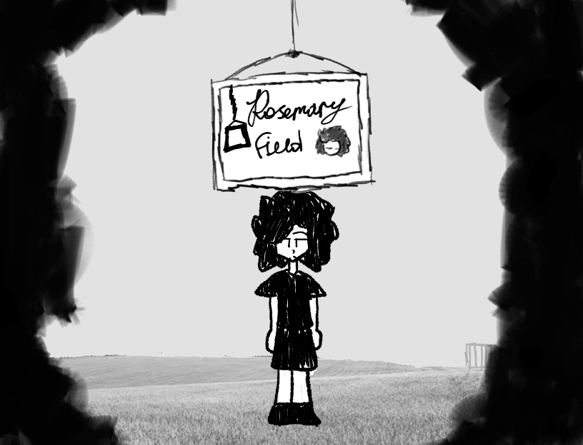

[Rosemary Field]
Rosemary Field - Это атмосферная психологическая инди-игра в жанре приключения с элементами RPG и хоррора, ориентированное на сюжет и атмосферу. Игроку предстоит изучать окружающий мир, взаимодействовать с персонажами и погружаться во внутренние переживания главного героя, где реальность переплетается с галлюцинациями и снами. Действие происходит в небольшом городе Силвергроув (округ Сент-Луис, штат Миннесота, США). Главный герой, Роузем Флауэр, — молодой человек с психическими расстройствами, включая лёгкую форму шизофрении и проблемы с контролем гнева. Он и его семья скрывают это от окружающих, опасаясь осуждения. После переезда Роузем решает начать новую жизнь и перестать прятаться в своём внутреннем мире. Однако чем дальше он пытается двигаться вперёд, тем сильнее стирается грань между реальностью и его искажённым восприятием. Игра вдохновлена OMORI и исследует темы изоляции, подавленных эмоций и внутренней борьбы.